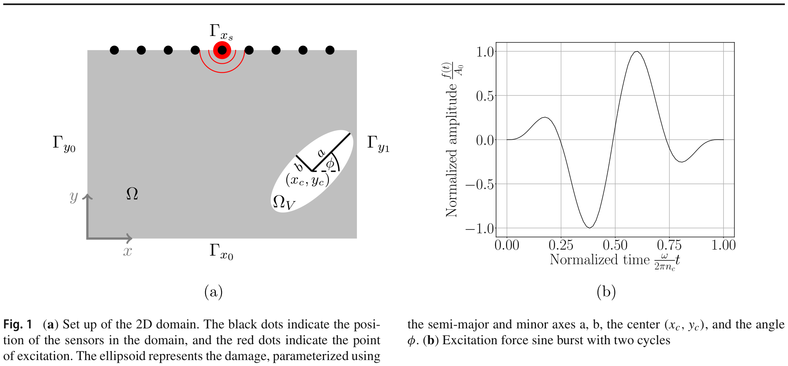
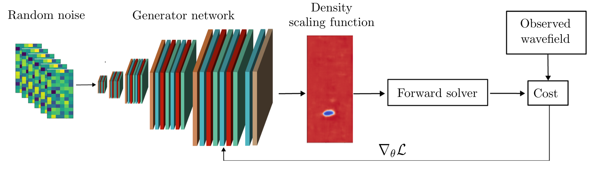
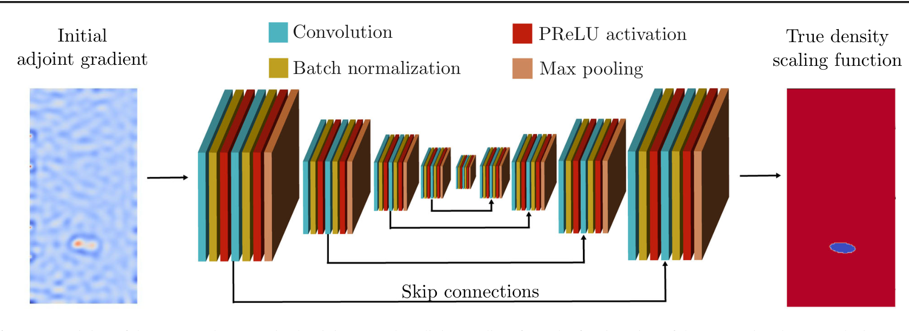
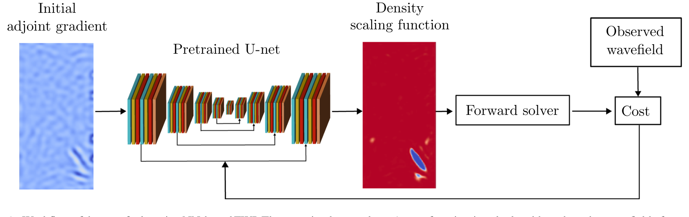
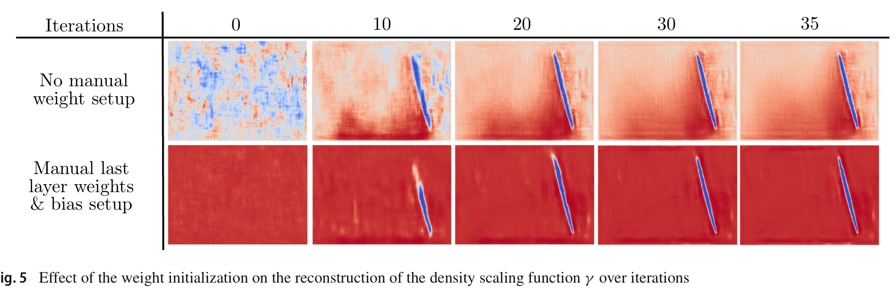
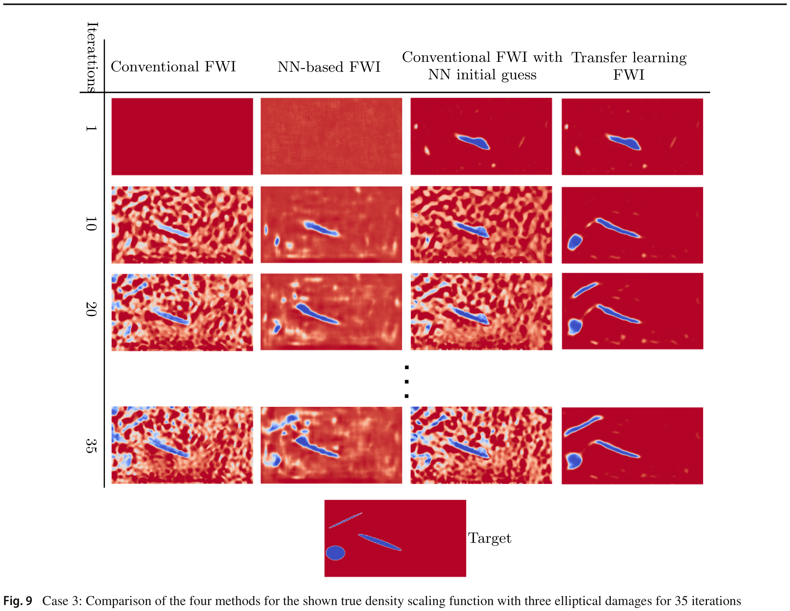

Featured paper
Accelerating full waveform inversion by transfer learning
Computational Mechanics (2025) 76:323–344 · published 10 February 2025 · open access, CC BY 4.0
- Abstract
- Motivation
- Physical model
- Conventional FWI
- NN-based FWI
- Transfer learning
- Results
- Limitations
- Cite this
Abstract
Full waveform inversion (FWI) reconstructs a material field from sparse wave measurements. Parameterizing that field with a neural network — NN-based FWI — improves the robustness and quality of the resulting optimization problem, but a poor starting point for the network's weights still slows convergence and can land the search in a physically meaningless local minimum. This paper introduces a transfer learning scheme: a network is pretrained to map the adjoint gradient from a single conventional-FWI iteration onto the true material field, using a training set of two-dimensional simulations with randomly placed elliptical voids that mimic phased-array ultrasonic testing. Starting NN-based FWI from these pretrained weights, rather than random ones, converges faster and lands on more physically meaningful reconstructions than conventional FWI, plain NN-based FWI, or conventional FWI seeded with the same pretrained guess.
Why this matters for solid structures
Civil infrastructure deteriorates from load cycles, temperature swings, natural disasters, and construction defects, and assessing that damage means testing it without breaking it open — non-destructive testing (NDT). FWI, originally built for imaging the Earth's interior in seismology, has been adapted to NDT: send ultrasonic waves through a structure, and fit a simulated wavefield to what the sensors actually measured. The catch is that FWI is an ill-posed, computationally expensive inverse problem — extracting precise damage location and severity from it is genuinely hard.
Neural networks have been used to help in a few ways: predicting the material field directly from sensor data (needs large labeled datasets and offers no accuracy guarantee), enriching signals with missing low-frequency content, or — the approach this paper builds on — using an overparameterized network simply as a reparametrization of the material field itself. That last idea, NN-based FWI, uses the network's own bias toward smooth, low-frequency solutions as an implicit regularizer, which is what keeps the reconstruction free of high-frequency artifacts. This paper's contribution is to give that network a much better starting point through pretraining, rather than starting it from random weights.
Physical model
The setup uses the 2D scalar wave equation. A dimensionless scaling function scales the background density so that the density becomes while the wave speed stays fixed at :
γ = 1 is undamaged material and γ → 0 marks a void. Mono-parameter inversion — recovering only γ while holding wave speed fixed — was chosen deliberately: scaling the wave speed instead causes oscillations at void interfaces that distort the gradient and pull the optimizer toward physically meaningless minima.

Conventional FWI
Conventional FWI treats every finite-difference grid point's γ value as a free coefficient and minimizes a misfit functional summing the squared error between simulated and observed wavefields at every sensor, for every source experiment:
The gradient with respect to each coefficient is obtained with the adjoint method — solve one more wave simulation backward in time with the residuals as sources, then combine the forward and adjoint wavefields:
This gradient — computed after just the first iteration, starting from homogeneous material — is the key ingredient the rest of the paper builds on: it already contains a rough, blurry outline of where the damage is.
NN-based FWI
Instead of optimizing the grid coefficients directly, a generator-style network Nγ predicts them from a fixed random input tensor k:
The gradient with respect to the network's weights θ comes from the chain rule — the adjoint method supplies the first factor, automatic differentiation the second:

Because the network is heavily overparameterized (526,252 parameters mapping a 128×8×4 input up to a 1×256×128 output through five upsampling stages), gradient descent on its weights acts as an implicit regularizer — it has an inherent bias toward low spatial frequencies, so the reconstruction naturally comes out smoother and with fewer high-frequency artifacts than conventional FWI, even without adding any explicit regularization term.
Transfer learning NN-based FWI
NN-based FWI still starts from a random weight initialization, and that randomness matters: a bad starting point slows convergence and can settle on a plausible-looking but wrong reconstruction. The paper's core idea is to pretrain the network so its starting weights already encode a sensible prior about what damage looks like.
A U-Net (784,039 parameters, with skip connections to fight vanishing gradients) is trained in a fully supervised way: the input is the adjoint gradient from the very first iteration of conventional FWI — that quick, rough hint from Eq. 9 — and the target output is the true γ field used to generate the training sample. The training set is 800 samples, each with one randomly placed, randomly sized and rotated elliptical void (chosen because ellipses approximate the crack shapes seen in fracture mechanics, and because the setup mirrors phased-array ultrasonic testing).

Once pretrained, the U-Net's weights become the starting point θp for the actual FWI optimization — the downstream task is no different from NN-based FWI, except the network no longer starts blind:

Weight initialization still matters
Even with pretraining, how the network's very last layer is initialized has an outsized effect. Glorot initialization alone leaves noisy artifacts in the first guess; initializing the last layer's weights from a narrow normal distribution (σ = 0.01) with a bias of 3, then passing the result through a sigmoid, produces a starting guess that's close to fully undamaged material almost everywhere — which is what real damage fields actually look like, mostly intact with a few confined flaws.

Results: three ellipses of different sizes
Four synthetic damage cases of increasing difficulty were used in the paper to compare four methods head to head: conventional FWI, NN-based FWI, conventional FWI seeded with the pretrained network's guess, and the full transfer learning NN-based FWI. The clearest of the four to walk through is Case 3 — three ellipses of different sizes and orientations.
Conventional FWI can only roughly recover the rightmost void within 35 iterations and misses the other two. NN-based FWI recovers one shape but struggles with the rest. Transfer learning NN-based FWI locates all three within 20 iterations and keeps refining their shape afterward, with negligible artifacts.

Training and optimization hyperparameters
| Hyperparameter | Transfer learning NN-FWI | Conv. FWI + NN guess | NN-based FWI | Conventional FWI |
|---|---|---|---|---|
| Learning rate | 5×10⁻⁴ | 5×10⁻² | 5×10⁻⁴ | 8×10⁻² |
| Gradient clipping | 1×10⁻⁵ | 1×10⁻⁵ | 5×10⁻⁵ | 1×10⁻⁵ |
| Cost scaling | 1×10¹⁰ | 1×10¹² | 1×10⁸ | 1×10¹² |
| U-Net pretraining hyperparameter | Value |
|---|---|
| Learning rate | 8×10⁻⁴ |
| Gradient clipping | 5×10⁻⁵ |
| LR schedule (β·epoch+1)^α | α = −0.5, β = 0.2 |
| Batch size | samples ÷ 10 |
| Pretraining samples / epochs | 800 samples, 100 epochs |
Limitations
- Extra hyperparameters to tune: learning rate, its scheduler, gradient clipping, cost scaling, and how many samples to pretrain on.
- Training data selection is a real trade-off: too-similar samples overfit and generalize poorly; as the domain grows, generating good training data and tuning hyperparameters both get harder.
- A strong prior can mislead the search when real damage looks very different from anything in training (Case 4).
Conclusion
Reparametrizing FWI's material field with a neural network already regularizes the inverse problem in a useful way. Pretraining that network — supervised, on the mapping from a single adjoint gradient to the true damage field — removes its dependence on random weight initialization and gives the downstream optimization a genuinely informed starting point. Across every damage case tested except one deliberately adversarial one, transfer learning NN-based FWI converged faster and reconstructed more accurately than conventional FWI, plain NN-based FWI, or conventional FWI given the same pretrained starting guess.
Cite this paper
Singh, D.S., Herrmann, L., Sun, Q., Bürchner, T., Dietrich, F., Kollmannsberger, S. Accelerating full waveform inversion by transfer learning. Computational Mechanics 76, 323–344 (2025). https://doi.org/10.1007/s00466-025-02600-w
Funded by the Georg Nemetschek Institut (DeepMonitor project), the Geothermal-Alliance Bavaria, and the Deutsche Forschungsgemeinschaft. Open access under a CC BY 4.0 license — figures and text on this page are adapted from the original article with attribution, as the license permits.